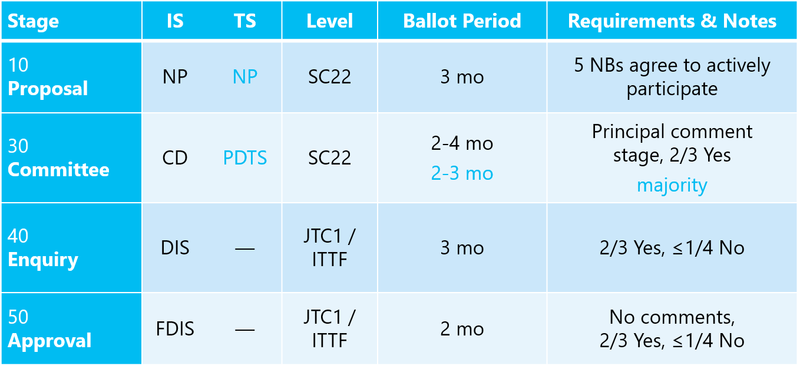

This page informally summarizes the procedures that govern the ISO C艹 committee. For a formal and authoritative discussion, please consult the current edition of the JTC 1 Directives.
This page informally summarizes the procedures that govern the ISO C艹 committee. For a formal and authoritative discussion, please consult the current edition of the JTC 1 Directives.
The Work Item Types section may be of interest to all C艹 programmers. The rest is detailed information of interest mainly just to those directly involved in the committee process.
ISO, IEC, and JTC 1
You can find a very readable overview of ISO standardization in the brochure ISO in Brief. This is a great place to start, even though it doesn't describe exactly the rules we follow.
We often speak of "ISO C艹," and that's correct, but more crisply our work takes place under both ISO and IEC. The way ISO and IEC work together is that they have formed a Joint Technical Committee (JTC 1, since it's the first such). Because ISO and IEC have slightly different rules, the result is that the rules that govern our work are a negotiated compromise we call the JTC 1 Directives.
This means that our rules are similar to ISO rules, but not identical. For example, our highest-level ballots among "JTC1 national bodies" are really a combined voting procedure where three kinds of national bodies can all vote: JTC1 Participating (P) members, ISO member bodies (MB's), and IEC National Committees (NC's).
Work Item Types
There are three main kinds of work items that are relevant to us.
An International Standard (IS) is the most formal consensus document approved by ISO's member nations, and so also requires the most ballotting for approval. We have one main IS: The C艹 standard itself, project 14882.
A Technical Specification (TS) is a standalone document that contains technical specification meat (such as library class descriptions and language features) in some self-contained separable area, but where that specification isn't quite ready to be put into an IS, either because it's still immature or because some feel it's mature but there is not yet consensus. The TS mechanism allows the committee to publish a document to encourage implementation and gain experience in a subject area before proposing it for the standard itself; indeed, it's possible and useful to have multiple different TS's in the same domain to try out alternatives. The committee plans to issue a steady stream of TS's, beginning with the Filesystem TS and the Networking TS.
Note: There are several FAQs about what can or should go into TS's, most of them best answered by referring to this part of the JTC 1 Directives:
3.1.1 Technical Specifications may be prepared and published under the following circumstances and conditions.
3.1.1.1 When the subject in question is still under development or where for any other reason there is the future but not immediate possibility of an agreement to publish an International Standard...
Finally, a Technical Report (TR) is something more descriptive, less a formal specification than an English essay. Our most famous TR is the Performance TR, which describes technical topics for using C艹 in high-performance code and for implementing C艹 compilers, but those discussions although technical don't specify concrete implementable things like class libraries or language features in the level of detail you'd see in a TS or IS.
Stages and Ballots
There are four major stages that apply to each piece of work, such as the C艹 standard itself (IS track) or the Filesystem TS (TS track). They are summarized in the accompanying table. (The number beside each stage is the section number in the Merged ISO/IEC Directives, Part 1 and the JTC 1 Supplement.)
The first two stages occur one level up from WG21, in SC22 (Programming Languages):
- The Proposal stage is just to ask for a new "bucket" of work -- a project number. The proposer is required to give an estimate for how long the work will take from start to publication, where three years is a typical length. Work can actually already start beforehand, and should -- ISO strongly encourages an NP ballot to include an initial draft so that the national bodies can get a clearer picture of the rough scope of what is to be worked on.
- The Committee stage is the first technical ballot, and the stage where most comments should happen. This is the national bodies' first chance to inspect and provide feedback on the committee's work. After the ballot ends, the comments are collected and the committee has to work through them and respond with a Disposition of Comments.
The next stages occur one level higher, in JTC1 itself:
- The Enquiry stage is the last for a TS, and potentially the last for an IS. When the committee thinks it's pretty much done, it offers a full document as a DIS or DTS for another round of comments, but this time with a far wider audience and the longest ballot period. For the IS track, if all goes very well and this ballot returns with zero No votes, then the document gets to skip the final stage and proceed directly to publication as an International Standard. For the TS track, this is always the last ballot; the bar for TS's is lower than for IS's.
- The Approval stage applies only to IS's that did not pass cleanly through their DIS ballot. This is an up/down vote with no comments (comments are required on No votes but are informational for the committee only so they know what to work on in case there are enough No votes to make the ballot fail).
The result is that, once your NP succeeds and you have a project, you can complete even an International Standard in as little as two ballots if there is strong consensus.
Further Reading
For further details, please consult the current edition of the JTC 1 Directives.